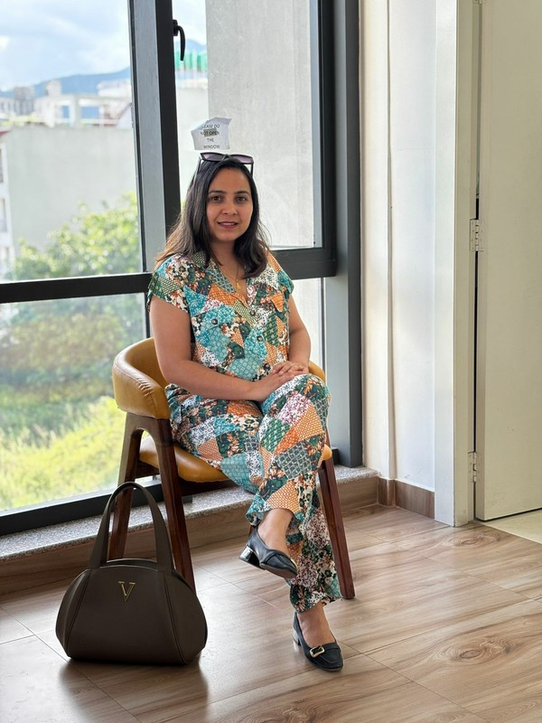

Fertility Counselor & Nursing Specialist · Nepal
Seven years of dedicated fertility counseling and nursing care — providing compassionate clinical and emotional support to couples across Nepal navigating infertility.
Book a Consultation →Every couple deserves to feel heard, informed and supported — not just treated. That is the care I bring to every consultation.

About
With seven years as a fertility counselor and nursing incharge at one of Nepal's leading IVF centres, I have worked directly with hundreds of couples at every stage of their fertility journey — from the first uncertain consultation to the last difficult result.
I understand what infertility looks and feels like from the inside — the anxiety before each procedure, the silence during the two-week wait, the grief after a failed cycle, and the particular loneliness of facing this in a society that rarely speaks about it openly.
My work combines clinical nursing care with evidence-based psychosocial counseling — addressing the medical, emotional, relational, and social dimensions of infertility that shape a couple's experience as much as any clinical protocol.
I work with couples from all backgrounds and all 7 provinces of Nepal — and I am committed to ensuring that every person who comes to me feels genuinely seen, informed, and supported throughout their journey.
What I Do
Before IVF or IUI begins — helping couples understand the process, set realistic expectations, address fears, and build the emotional resilience needed for the journey ahead.
Clinical nursing support throughout the full IVF cycle — medication management, monitoring, procedure coordination, and ensuring couples understand every step of their treatment clearly and confidently.
The weeks of an IVF cycle are emotionally intense. I provide consistent support through stimulation, retrieval, fertilization, transfer, and the waiting period — so no couple faces the hardest moments alone.
Whether a cycle succeeds or fails, the emotional aftermath requires skilled, compassionate care. Specializing in grief counseling after failed cycles and ongoing support for recurrent pregnancy loss.
Infertility places extraordinary pressure on relationships. Working with both partners together — addressing communication, shared decision-making, intimacy, and the strain of treatment on the relationship.
Men carry their own grief and stigma around infertility — largely in silence. Providing dedicated, confidential counseling for men navigating diagnosis, treatment, and the emotional weight of infertility in Nepal's cultural context.
How I Work
A full, unhurried initial consultation — understanding your complete medical, emotional, and personal history. No rushing. No assumptions. Just listening.
Developing a counseling and support plan tailored specifically to your situation — running alongside clinical treatment, not separate from it.
Present through every critical moment — procedures, results, setbacks. Consistent, reliable, human support at every stage of the cycle.
Whether the outcome is joy or grief — structured follow-up ensures you are supported through what comes next, for as long as you need.
What Couples Say
"She was the one person who made us feel like we were not alone. Every question answered. Every fear acknowledged. We could not have gone through the process without her."
"When our second cycle failed I did not know how to speak about what I was feeling. She gave me the words and the space to grieve properly. That changed everything for us."
"My husband came to one session. He left a different person. She understood what he was carrying in a way nobody else had tried to. We are grateful every single day."
Limited Slots Available
Your first conversation with Radhika is completely free — no commitment, no pressure. Just an honest, confidential discussion about where you are and how she can help.
Get In Touch
Whether you are about to start treatment, in the middle of a cycle, or recovering from a difficult result — reach out. The first conversation is always free.